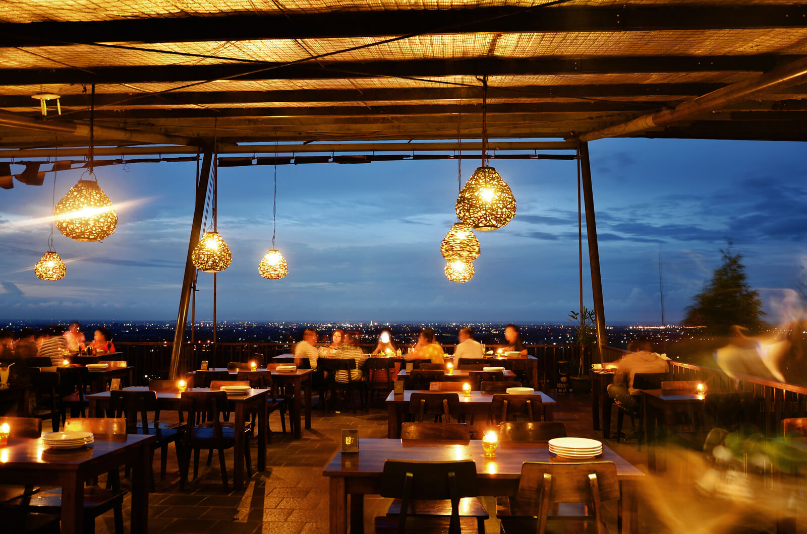

acara
lunch

Klapa Manis restaurant
Klapa Manis Restaurant, merupakan restoran yang terletak di Jalan Raya Gronggong - Cirebon. Hadir dengan konsep tadisional yang dikemas secara berbeda, menawarkan perpaduan panorama alam dan keindahan Kota Cirebon. Dengan mengahdirkan keramah tamahan dalam pelayanan dan ketrampilan juru masak yang profesional, diharapkan akan mampu menciptakan atmosfir kesempurnaan cita rasa lewat sajian yang bervariasi.
acara
dinner
Keraton Kasepuhan
Persiapkan diri anda sebagai tamu kehormatan, duta budaya dari PPA untuk Negeri. Anda akan disuguhi pengalaman makan malam dari negeri sendiri, kemewahan abadi dalam rangkaian acara, hiburan yang otentik, dan pengalaman yang tiada duanya.Royal dinner akan diselenggarakan di salah satu keraton terbesar di Cirebon, yaitu adalah Keraton Kasepuhan.